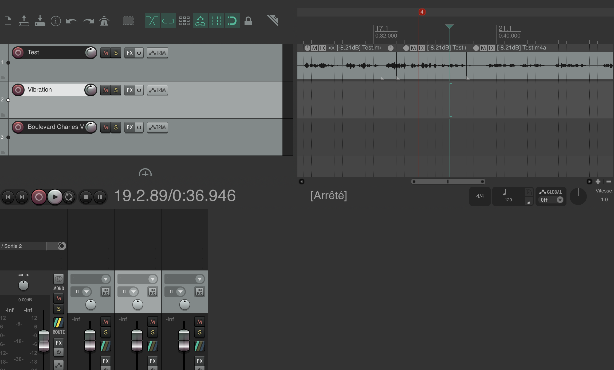

City of Light
VFX, Incrustation & Storytelling
L'Univers
Quatre jeunes filles s'ennuyaient sur un canapé un jour de pluie et décidèrent de lancer un jeu vidéo. Elles furent soudainement aspirées dans l'écran et se retrouvèrent projetées au cœur de cet univers. Elles durent alors faire face à de nombreuses péripéties, dont certaines furent particulièrement difficiles.
Compétences développées
De la création d'un scénario complet à la réalisation de storyboards précis. Nous avons géré le tournage technique avec une DJI Osmo pour la stabilité et maîtrisé l'incrustation sur fond vert.

Post-Production
Maîtrise d'After Effects pour le motion design et les effets visuels (incrustation), Premiere Pro pour le montage dynamique et REAPER pour la création sonore et le mixage audio.